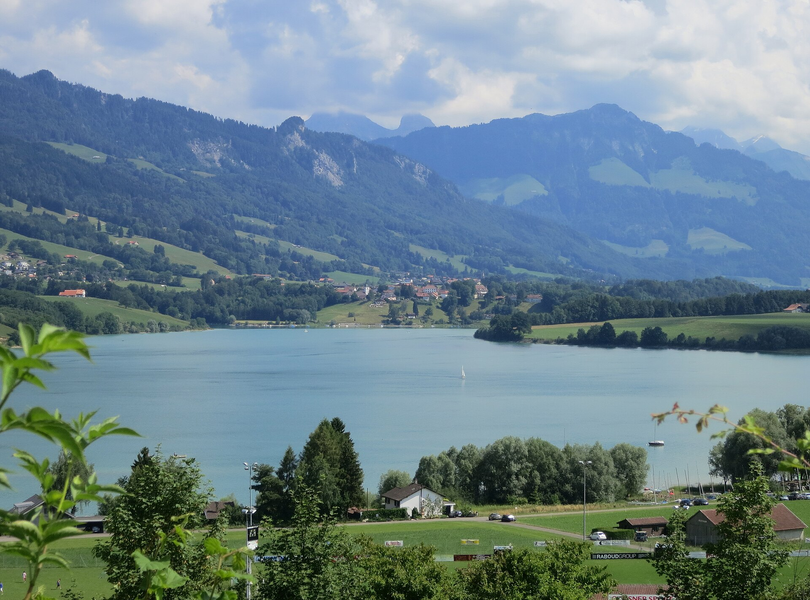

_sur_le_L%C3%A9man.jpg){kind=link}
Mit einem Badeplatz ausprobieren
Wasser bei 12°. Perfekt für die Mutigen.
12.3°Wasser8°Luft6Wind km/h
Winterbaden PerfektPaddeln Gut
Segeln / Wing Nein
Oder probier:
So funktioniert’s
Zuerst wählst du deinen Badeplatz.
Lausanne – Vidyoder die Stecknadel: der nächste
Wasser9.4°
Wind4 km/h
Dann tippst du eine Aktivität an.
PaddleGut
Zum Schluss liest du das Urteil und gehst an den See.
Das Tagesurteilein Satz, jeden Morgen
Wasser bei 9°. Perfekt für die Mutigen.
9.4°Wasser in Vidy220Badeplätze3 Std.zwischen zwei Messungen
Das Wasser heute Morgen
Temperatur in 70 cm Tiefe, Badeplatz für Badeplatz. Am selben See beträgt der Unterschied oft mehr als drei Grad.

Was eine Wetter-App nicht sagt
Was man wissen will
Mein SeeEine allgemeine Wetter-AppDie offizielle Messung
Wasser an deinem Badeplatz
218 Badeplätze, in 70 cm TiefeSeltenEine Station, in Genf
Die Bise
Erkannt, mit WarnungDer Wind, ohne den NamenNein
Baden, Paddeln, Segeln
Eine Note für jede AktivitätDas musst du selbst erratenNein
Die nächsten Stunden
Stunde für Stunde, über 12 Std.Die rohen PrognosenNein
Wo man danach etwas trinkt
92 geprüfte AdressenNeinNein
Ohne Netz am Strand
Ja, die letzten DatenJe nach AppNein
Konto und Preis
Kein Konto, gratisOft ein KontoGratis

Auch im Winter
Von Oktober bis Mai, wenn das Wasser unter 15° fällt, merkt sich die App das Datum jedes deiner Bäder und lässt dich deinen Verlauf teilen. Das erste ist das härteste.
3
Winterbade-Challenge3 Bäder diese Saison. Die Schwäne respektieren dich.


- Häufige Fragen

Die App öffnet sich an diesem Badeplatz, ohne Konto und ohne Installation. Du kannst sie danach zu deinem Startbildschirm hinzufügen.